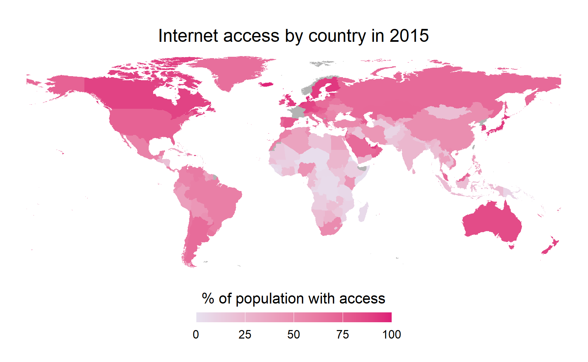

# Load libraries and settings
# install.packages('maps')
# install.packages('sf')
# install.packages('rnaturalearth')
# remotes::install_github("ropensci/rnaturalearthhires")
# remotes::install_github("ropensci/rnaturalearthdata")
library(knitr)
library(cowplot)
library(viridis)
library(tidyverse)
library(janitor)
library(maps)
library(sf)
library(rnaturalearth)
library(rnaturalearthdata)
library(rnaturalearthhires)
options(
htmltools.dir.version = FALSE,
knitr.table.format = "html",
knitr.kable.NA = '',
tibble.width = Inf)
knitr::opts_chunk$set(
warning = FALSE,
message = FALSE,
fig.path = "figs/",
fig.retina = 3)
dplyr.width = Inf
# Load all the data sets
milk_production <- read_csv(file.path('data', 'milk_production.csv'))
us_coffee_shops <- read_csv(file.path('data', 'us_coffee_shops.csv'))
internet_users <- read_csv(file.path('data', 'internet_users_country.csv'))
# Load state_abbs data frame, containing state abbreviations
source(file.path('data', 'state_abbs.R'))Maps
EMSE 4572 / 6572: Exploratory Data Analysis
1. Maps
Use the rnaturalearth library to extract and plot the shape files for China and Africa.
China:
# Get the shape file
# Make the plotAfrica:
# Get the shape file
# Make the plot2. Adding data to maps
Create the map of squirrels in NYC’s central park using the following data:
- The
CentralPark.shpfile in thedata/central_parkfolder. - The
nyc_squirrels.csvfile in thedatafolder.
Read in the shape file and squirrels data:
central_park <- st_read(file.path(
'data', 'central_park', 'CentralPark.shp'))Reading layer `CentralPark' from data source
`C:\Users\mafel\OneDrive\Desktop\EMSE 4572 - Data Analysis\GitHub\eda-class-documents\C12-maps\data\central_park\CentralPark.shp'
using driver `ESRI Shapefile'
Simple feature collection with 2550 features and 6 fields
Geometry type: LINESTRING
Dimension: XY
Bounding box: xmin: -73.99249 ymin: 40.7625 xmax: -73.93922 ymax: 40.8051
Geodetic CRS: WGS 84squirrels <- read_csv(file.path('data', 'nyc_squirrels.csv'))Make the plot:
# Write code to make the map3. Projections
Use the internet_users_country.csv data and the world data frame from the rnaturalearth library to create the map of internet access by country in 2015.
Hints:
- The
iso_a3variable in theworldsdata frame corresponds with thecodevariable in theinternet_users_country.csvdata frame (use this for joining). - Use
scale_fill_gradient()to fill the color:
scale_fill_gradient(
low = "#e7e1ef",
high = "#dd1c77",
na.value = "grey70",
limits = c(0, 100))Filter out the internet data to only include 2015 data:
internet_users_2015 <- internet_users %>%
filter(year == 2015)Load the shape file of world countries:
world <- ne_countries(
scale = "medium",
returnclass = "sf")Join the internet user data to the world shape file:
world_int <- world %>%
left_join(internet_users_2015, by = c('iso_a3' = 'code')) %>%
filter(iso_a3 != "ATA")Make the baseline map (with no specific projection)
internet_map <- ggplot(world_int) +
geom_sf(aes(fill = percent), color = NA) +
scale_fill_gradient(
low = "#e7e1ef",
high = "#dd1c77",
na.value = "grey70",
limits = c(0, 100)) +
guides(fill = guide_colorbar(
title.position = "top",
title.hjust = 0.5,
barwidth = 10, barheight = 0.5)) +
theme_void() +
theme(
legend.position = 'bottom',
plot.title = element_text(hjust = 0.5)) +
labs(
title = "Internet access by country in 2015",
fill = '% of population with access')
internet_map
Re-make the map using a Robinson projection
# Write code to make the map with a Robinson projectionRe-make the map using a Mercator projection
# Write code to make the map with a Mercator projection4. Extra practice
Use the us_states_cont data frame and the state_abbs data frame to create a labeled map of the U.S.
Load the shape file of the continental US states & set the CRS to an Albers projection:
us_states_cont <- ne_states(
country = 'united states of america',
returnclass = 'sf') %>%
filter(! name %in% c('Alaska', 'Hawaii')) %>%
st_transform(crs = "ESRI:102003")Compute the centroids (the center point) of each state shape:
centroids <- as.data.frame(
st_coordinates(st_centroid(us_states_cont)))
names(centroids) <- c('label_x', 'label_y')
us_states_cont <- bind_cols(us_states_cont, centroids)Join the state_abbs data frame to the us_states_cont data frame and make the plot:
# Write code to make the map